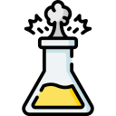

¿Qué tipo de reacción química se representa con la fórmula?
2H2 + O2 → 2H2O
a) Síntesis
b) Descomposición
c) Redox
¿Qué tipo de reacción química se representa con la fórmula?
2H2O → 2H2 + O2
a) Sustitución
b) Descomposición
c) Neutralización
¿Qué tipo de reacción química se representa con la fórmula?
KCl + H2SO4 → K2SO4 + 2HCl
a) Doble Sustitución
b) Síntesis
c) Neutralización
¿Qué tipo de reacción química se representa con la fórmula?
NaCl + AgNO3 → NaNO3 + AgCl
a) Síntesis
b) Descomposición
c) Doble sustitución
¿Qué tipo de reacción química se representa con la fórmula?
HCl + NaOH → NaCl + H2O
a) Descomposición
b) Neutralización
c) Redox
¿Qué tipo de reacción química se representa con la fórmula?
2Mg + O2 → 2MgO
a) Síntesis
b) Descomposición
c) Redox
¿Qué tipo de reacción química implica la formación de agua y una sal?
a) Síntesis
b) Descomposición
c) Neutralización
¿Cuál de los siguientes no es un reactivo común en las reacciones químicas?
a) Ácido clorhídrico
b) Sulfato de cobre
c) Dióxido de carbono
¿Cuál de los siguientes no es un producto común en las reacciones químicas?

a) Sulfato de sodio
b) Dióxido de carbono
c) Ácido sulfúrico
¿Qué concepto de la química estudia las relaciones cuantitativas entre reactivos y productos?
a) Estequiometría
b) Catálisis
c) Polaridad
¿Qué tipo de reacción química implica la transferencia de electrones entre reactivos?
a) Síntesis
b) Redox
c) Descomposición
¿Qué sustancia aumenta la velocidad de una reacción química sin ser consumida en ella?
a) Reactivo
b) Producto
c) Catalizador